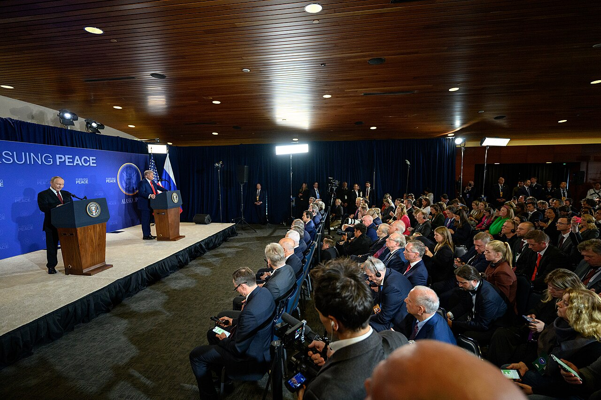

GRIEVANCE XXV ◆ THE WORLD BEYOND
He has loosened the restraints upon an aggressor while applying new pressure to the nation under attack.
THE RECORD SHOWS
In October 2026, Trump eased or waived Russia-related sanctions and concluded a diesel arrangement with Moscow as he pressed Ukraine to curb refinery attacks.

The White House presents these steps as part of an effort to reduce fuel costs and bring Russia to negotiations. Reuters reported bipartisan concern in Congress that they relax pressure on Putin without comparable concessions, while Trump’s criticism of Ukraine intensified.
A DOCUMENTED SEQUENCE
3 MILESTONES- October 2026Trump pressed Ukraine on its strikes against Russian energy targets while seeking terms with Moscow.
- October 12–17, 2026Washington moved to ease Russian diesel-related restrictions and waived several previously announced sanctions or tariffs.
- October 20–22, 2026An administration envoy sought talks with Putin and Republican lawmakers openly questioned concessions to Russia.